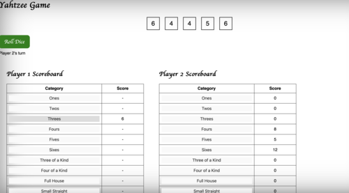

Third-year computer science CO-OP student at the University of Ottawa, expected graduation April 2026.
Proficient in a range of programming languages including Python, R, Go, Prologue, and Scheme. Skilled in SQL and manipulating data from large databases.
Valuable practical experience from CO-OP placements at Solacom and The City of Pickering.
Resume
Summary of Qualifications
Third-year computer science CO-OP student at the University of Ottawa, expected graduation April/2026
Proficient in Python, R, Go, Prologue, and Scheme
Proficient in SQL and data manipulation
Experience from CO-OP placements at Solacom and The City of Pickering
Work Experience
Comtech Solacom Technologies - Systems Engineering Intern (Jan'24 - May'24)
Led the deployment of a FortiGate firewall system alongside Cisco switches, configuring network settings and optimizing performance.
Replaced and overhauled the main server system running Dell servers within a rack environment.
Configured remote BIOS administration (iDrac) interfaces and facilitated the installation and configuration of ESXi clients on servers.
Spearheaded candidate evaluation and administrative operations for prospective co-op participants.
Crafted and maintained comprehensive documentation (MNIN) detailing hardware and software protocols.
City of Pickering - IT CO-OP Student (May'23 - Sep'23)
Managed IT Helpdesk tickets by providing various hardware/software support to employees around the city.
Proficient in Kantech EntraPass Web & Client and assisted with managing access cards and security features.
Experienced in Active Directory management for city/user accounts.
Created new standard operating procedures and policies for EntraPass Web/Client and city cellphones.
Maintained and managed inventory for new hardware and disposed of electronic waste.
Education
Bachelor of Science in Computer Science (CO-OP), University of Ottawa (Sept' 2021 – Current, expected graduation April/2026)
Relevant courses: Programming Paradigms, Databases, Analysis and Design of UI, Data Structures and Algorithms, Data Communications and Networking, Programming language concepts.
Projects
Android Mealer App
Developed an Ottawa-based meal-sharing application called "Mealer" using Android Studio, Java, and SQL.
Designed and implemented the application architecture to support three types of users: Cook, Client, and Administrator.
Implemented user registration process for clients and cooks, which collects information such as first name, last name, email address, account password, and address with validated fields and stored in a database
Developed a user interface that displays the cook's information (name, address, and description they wrote about themselves) and the meal's information (price, meal type, cuisine type, list of ingredients, allergens, price, and description) for each meal in the search results.
Developed a rating and complaint system that allows clients to rate meals and submit complaints about cooks. The complaints are assessed by the administrator, who has the authority to suspend cooks temporarily or indefinitely based on the complaint.
Object Detection with DBSCAN Algorithm
Implemented DBSCAN (Density-Based Spatial Clustering of Applications with Noise), a data clustering algorithm, in Java.
Developed a program to discover clusters of different shapes and sizes, marking isolated points in low-density regions as outliers.
Analyzed LiDAR point clouds captured by a vehicle to detect objects using the DBSCAN algorithm.
Output the results of the program as a CSV file that contains point coordinates, corresponding cluster labels, and unique RGB colour values for each cluster.
Yatzy Game with PHP Integration

Enhanced a single-player Yatzy game by adding a PHP server component to manage the game state and scoring.
Developed a JSON API using PHP to handle game actions such as rolling dice, holding dice, and scoring categories.
Used AJAX to communicate between the client-side JavaScript and the PHP server, ensuring smooth gameplay and state management.
Implemented server-side session management to store game state and leaderboard information.
Created a dynamic leaderboard to track and display the top 10 scores.